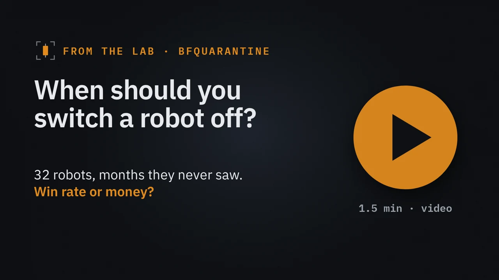
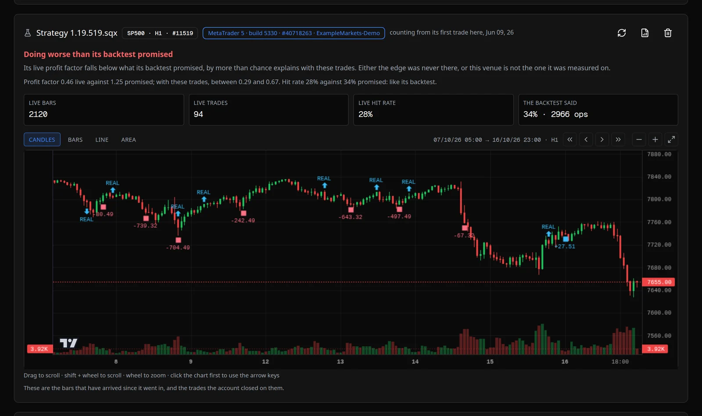
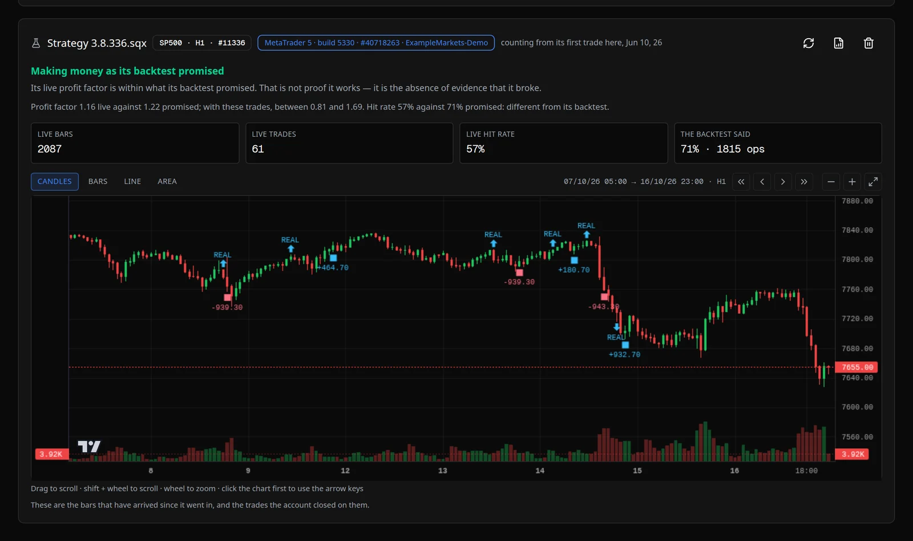
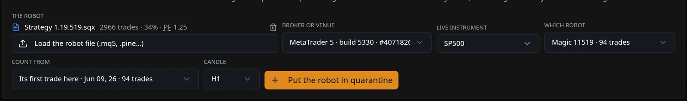

La pregunta
Tienes un robot en marcha. Tiene un backtest que pintaba bien. Lleva unas semanas malas. ¿Se ha roto, o es una mala racha? Si lo apagas pronto, matas a un buen robot en su racha de mala suerte. Si lo apagas tarde, pagas la lección.
Casi todas las herramientas contestan mirando el acierto: si el robot sigue acertando tanto como decía su backtest, «está bien». Nosotros también lo hacíamos. Luego comprobamos esa respuesta con robots cuyo final ya conocíamos.
El experimento
32 robots hechos con StrategyQuant X, cada uno con su backtest: lo que prometía. Pasamos cada uno por el Probador de MetaTrader 5 en los meses siguientes al final de su backtest, meses que no había visto nunca. Y miramos qué pasó de verdad:
- 21 perdieron dinero: ganaban menos de 0,95 $ por cada dólar que perdían.
- 5 quedaron más o menos planos.
- 6 ganaron.
Así que la respuesta buena se conoce para cada robot. Ahora: ¿qué dice cada manera de juzgar?
Juzgar por el acierto
| Lo que pasó de verdad | Robots | «Se ha ido» | «Sigue como su backtest» | «Es pronto» |
|---|---|---|---|---|
| Perdieron | 21 | 10 | 5 | 6 |
| Planos | 5 | 1 | 2 | 2 |
| Ganaron | 6 | 3 | 1 | 2 |
A cinco robots que perdían dinero se les dijo «sigue como su backtest». Uno había perdido 20.967 $ en 94 operaciones: seguía acertando lo bastante para aprobar. Y a tres que ganaban se les dijo «se ha ido», porque acertaban menos de lo prometido, aunque ganaban dinero. Uno iba 3.763 $ arriba.


Un robot puede acertar lo que prometió y perder dinero. Puede acertar menos y ganarlo. El acierto es un detalle; lo que importa es el dinero.
Juzgar por el dinero
Así que cambiamos la pregunta: ¿gana menos por cada dólar que arriesga de lo que prometía, más allá de lo que explica la mala suerte? En números: su factor de beneficio (dólares ganados por cada dólar perdido) contra el de su backtest, con un margen para la suerte, y sólo cuando tiene 20 operaciones para juzgar.
Con un margen del 90 %, doce de los 21 pillados, y ni un robot bueno apagado por error. Y nunca dice «aguanta» de un robot que pierde dinero.
¿Y los otros nueve? Casi todos tenían demasiado pocas operaciones para que nadie distinga la mala suerte de un robot roto, y para ésos la respuesta honrada es «es pronto». Una regla que pillara a los 21 también mataría robots buenos en sus semanas malas: juzgar por «pierde dinero» a secas pilla 15 en vez de 12, y apaga por error dos robots planos.
Lo que hace BFQuarantine con esto
BFQuarantine lee las operaciones de verdad de tu robot en tu cuenta (MetaTrader 5, JForex o un monedero web3), sólo leyendo, nunca operando. Le dices qué robot por su número mágico, y cuenta desde su primera operación en la cuenta. Luego pone esas operaciones al lado de lo que prometía el backtest y da una de tres respuestas: es pronto, aguanta, o va peor de lo que prometía. Cada cifra en pantalla va con el margen que deja la suerte.

Lo que 32 robots pueden decir y lo que no
32 robots no son una muestra grande, y casi todos tuvieron entre 20 y 50 operaciones en sus meses nuevos. Comparamos cuatro reglas con ellos y nos quedamos con la que no daba falsas alarmas, así que las cifras exactas son una primera medida, no una ley.
Si tienes un robot en marcha, la pregunta no es si ha tenido una semana mala. Es si el dinero dice que ha dejado de ser el robot que compraste.
BFQuarantine: 199 USD, una vez, para Linux (Windows y macOS, próximamente).
De dónde salen los números
De nuestras propias medidas, del 19 de octubre de 2026. 32 robots de StrategyQuant X, la promesa de cada uno leída de su fichero .sqx, tal como lo recibiría quien compra, y los meses después de cada backtest, hasta el 16 de octubre de 2026, pasados por el Probador de MetaTrader 5 con un bróker corriente. Un robot perdió dinero si ganaba menos de 0,95 $ por cada dólar que perdía, y ganó por encima de 1,05 $. El margen de la regla del dinero sale de remuestrear 4.000 veces las operaciones nuevas de cada robot. Las capturas son de BFQuarantine con una cuenta demo inventada que lleva las operaciones reales del Probador de dos de esos robots.